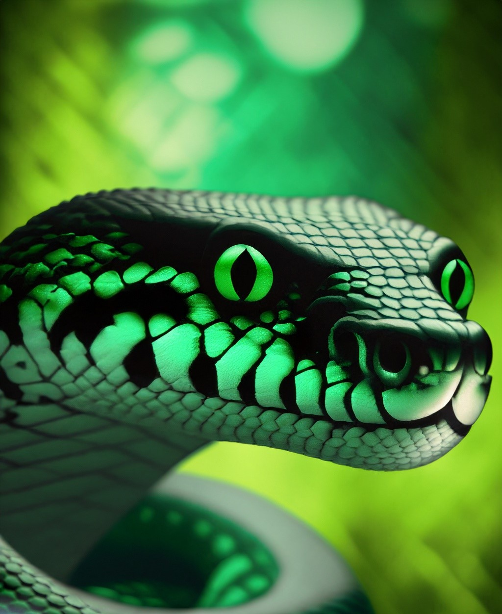
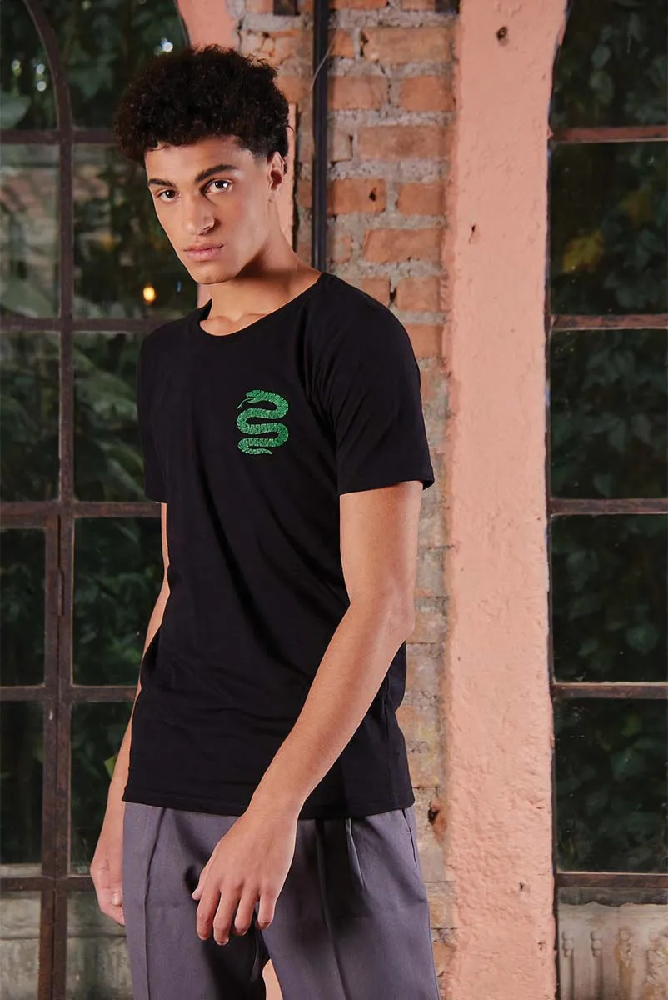
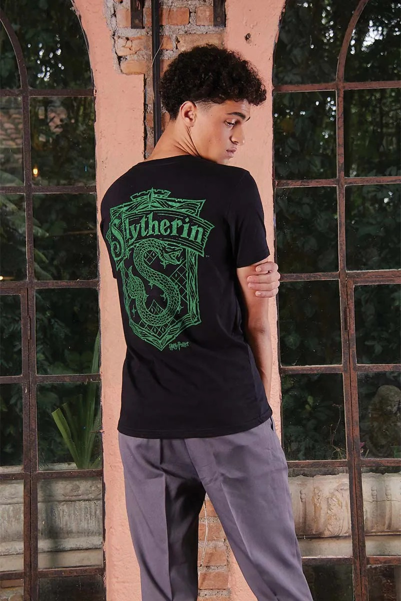
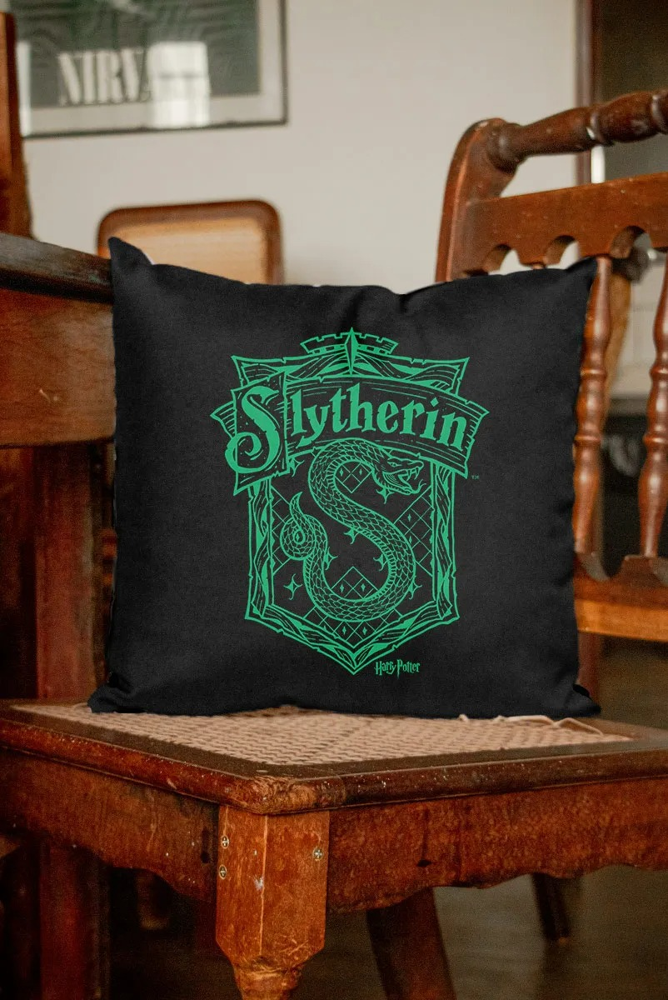

Bem-vindo a página da Sonserina de Hogwarts! Aqui, você encontrará informações detalhadas sobre uma das quatro casas da famosa escola de bruxaria e magia.
A Sonserina é conhecida por suas características distintas, como astúcia, ambição e determinação. Os membros desta casa são espertos e estrategistas, sempre em busca de oportunidades para alcançar seus objetivos. Eles valorizam a auto-preservação e a ambição pessoal.
Se você é um estudante da Sonserina, pode esperar encontrar um ambiente competitivo e desafiador. A casa valoriza a excelência e incentiva seus membros a se destacarem em suas áreas de interesse. Você encontrará colegas de casa ambiciosos e determinados, prontos para fazerem o que for necessário para alcançar o sucesso.

A Sonserina é liderada pela cobra, um animal que representa astúcia e sabedoria. A cor da casa é verde e prata, e seu fundador foi Salazar Slytherin, um bruxo famoso por sua linhagem pura e suas crenças na superioridade mágica.
Na Sonserina, você terá a oportunidade de desenvolver suas habilidades mágicas com os professores mais exigentes da escola. Além disso, poderá se envolver em atividades extracurriculares que valorizam a ambição e a liderança, como o Clube de Duelos e o Clube de Poções Avançadas.
Se você é astuto e ambicioso, a Sonserina é a casa perfeita para você. Junte-se a nós e faça parte dessa comunidade incrível de bruxos e bruxas que buscam sucesso, ambição e magia.
Shop Sonserina

Camisa
Camisa
U$65

Camisa
Camisa
U$65
Cachecol
U$30

Almofada